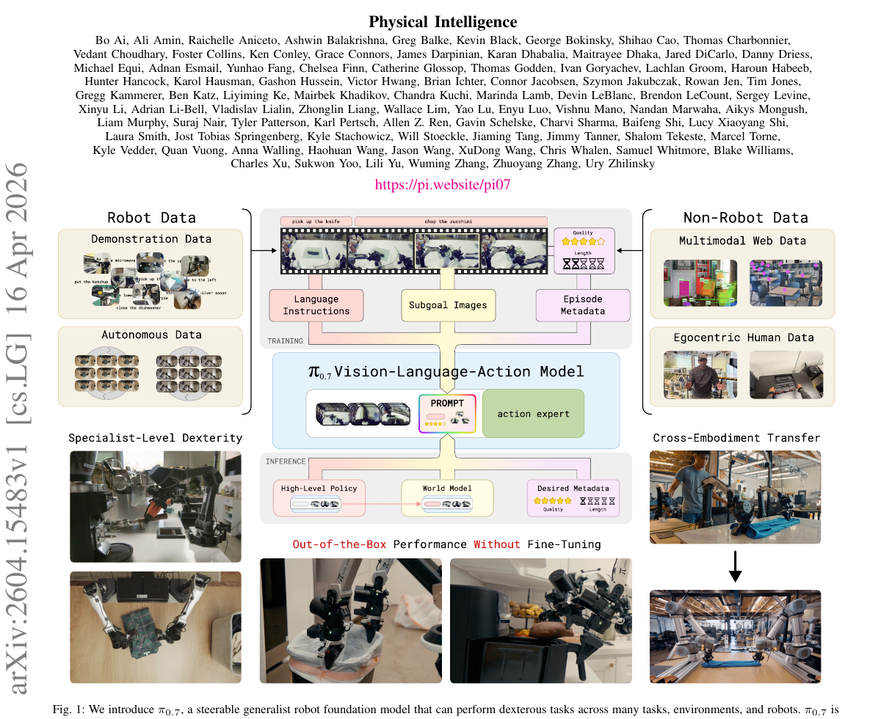
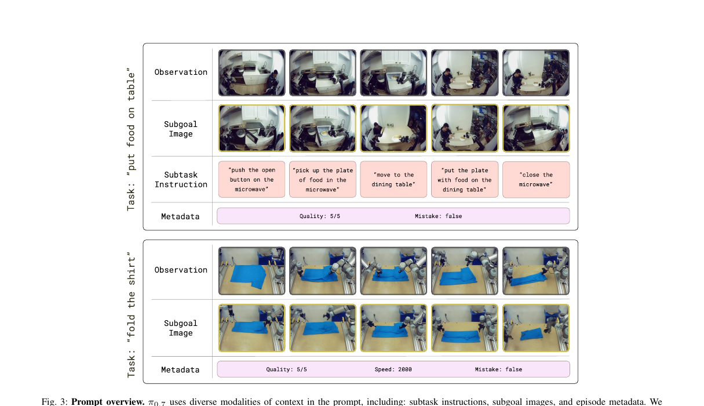
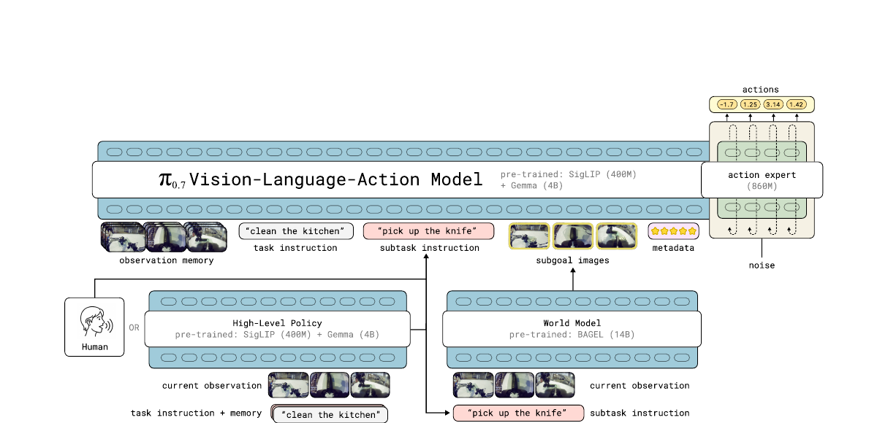
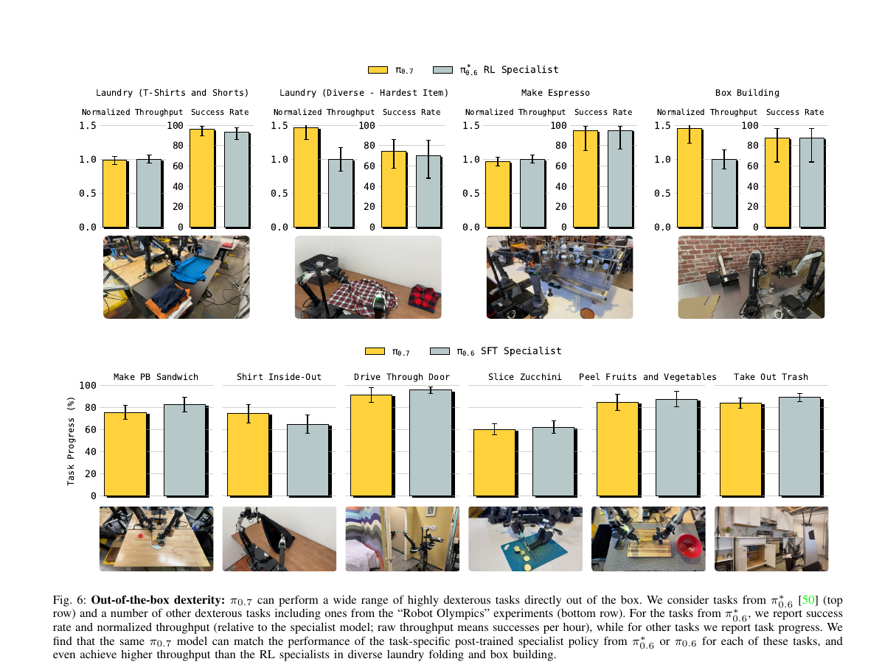
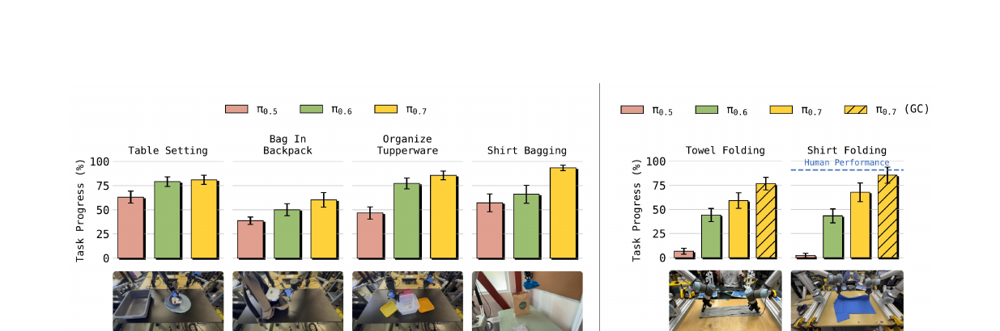
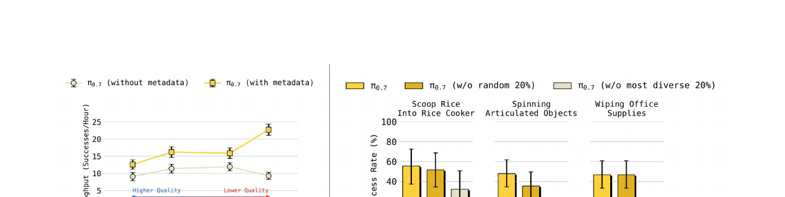

π₀.₇: a Steerable Generalist Robotic Foundation Model with Emergent Capabilities
Physical Intelligence · Bo Ai, Ali Amin, Black, Finn, Levine et al. · arXiv 2604.15483 · 2026-04
π₀.₇ 的核心思想极简：用更丰富的 prompt（prompt expansion）让一个通才 VLA 变得可操控（steerable）。 它不改架构（依然是 VLM + Action Expert），而是在 prompt 里塞进 subtask 指令 + subgoal 图片 + episode 元数据（速度/质量/错误标签）+ 控制模式， 让同一个模型能被"引导"到不同的行为模式。
阅读路径：先看 §2 差异对照（如果你已读过 π₀/π₀.₅），核心在 §3（Diverse Prompting）， 然后 §7 看五组实验，最后 §8 收获。
§1 一句话总结
π₀.₇ 通过丰富多模态 prompt conditioning（subtask 指令 + subgoal 图片 + episode 元数据）， 让一个 5B 参数的通才 VLA 在无需任务级 fine-tuning 的前提下： (1) 匹配或超越 RL 专家在灵巧任务上的性能， (2) 跟从复杂语言指令， (3) 零样本跨本体迁移（包括从未见过的机器人折衣服）， (4) 组合式泛化到训练中未见过的新任务。
展开原文 · Abstract
"We present a new robotic foundation model, called π₀.₇, that can enable strong out-of-the-box performance in a wide range of scenarios. π₀.₇ can follow diverse language instructions in unseen environments, provide zero-shot cross-embodiment generalization, and perform challenging tasks such as operating an espresso machine out of the box at a level of performance that matches much more specialized RL-finetuned models."
以前的 VLA（包括 π₀/π₀.₅）给模型一句话"clean the kitchen"就让它干。 π₀.₇ 像给实习生发一张详细工单：任务描述 + 每步图例 + "要快/要准/别出错"的 KPI 标签 + "用关节控制还是末端控制"。 结果：同一个模型，给不同工单就能表现出截然不同的行为策略。

§2 与 π₀ / π₀.₅ / π₀.₆ 的差异
π₀.₇ 在模型架构上变化不大，核心创新在数据+prompt层。 对比前几代，用一张表锁死差异。
2.2 差异对照表
| 层面 | π₀（2024-10） | π₀.₅（2025-04） | π₀.₇（2026-04） |
| 骨干 VLM | PaliGemma (SigLIP + Gemma 2.6B) | 同 PaliGemma | Gemma3 4B (400M SigLIP) |
| Action Expert | 300M flow matching | ~300M (同 π₀) | 860M flow matching |
| 总参数 | ~3B | ~3B | ~5B |
| 视觉历史 | 当前帧 | MEM 压缩历史 | MEM-style：最多 6 历史帧 + 时空压缩 |
| Prompt 内容 | task instruction 仅一句话 | task + subtask + web co-train | task + subtask + subgoal images + episode metadata + control mode |
| Subgoal 图片 | 无 | 无 | World Model (BAGEL 14B) 生成多视角 subgoal |
| Episode 元数据 | 无 | 无 | speed / quality / mistake 标签 |
| 训练数据 | 高质量 demo 为主 | 异质机器人 + web 数据 | demo + 次优自主数据 + 失败数据 + RL rollout + 人类视频 + web |
| 推理时调控 | 仅改 language | 仅改 language + subtask | metadata prompting + CFG + coaching |
| Cross-embodiment | 有限（task-specific fine-tune） | 改善 | 零样本跨本体折衣服，匹配人类遥操 |
π₀.₇ 的架构变化是渐进式的（换 Gemma3 + 更大 Action Expert）， 真正的质变来自数据侧：(1) 大量吸收次优 / 失败轨迹，(2) 用 episode metadata 消歧， (3) 用 world model 生成视觉 subgoal。一句话："不是模型变大了，是 prompt 变丰富了"。
§3 核心创新：Diverse Prompting
π₀.₇ 的核心不在架构，而在怎么组织给模型的输入。 它把 prompt 从一句话 task description 扩展到四个维度的多模态 context： subtask 指令、subgoal 图片、episode 元数据、控制模式。 训练时随机 dropout 各组件，推理时灵活组合。

3.1 Subtask Instructions
沿用 π₀.₅ 的设计，在 task 级描述 ℓ（如"clean the kitchen"）之外，
还加入中间粒度的语义子任务 ℓ̂（如"open the fridge door"）。
推理时由一个 learned high-level policy（同架构的另一个 VLA）或人类 coaching 产生。
这让模型可以被逐步口头引导（verbally coached）做从未见过的任务， 比如用语言一步一步教机器人往空气炸锅里放红薯。
3.2 Subgoal Images
文字指令说"open the fridge door"，但没告诉机器人手该抓哪里。
π₀.₇ 额外加入多视角 subgoal 图片 g = [G¹,...,Gⁿ]，
描绘任务完成后世界"应该长什么样"——提供了比文字更精确的空间 grounding。
Subgoal 图片由一个基于 BAGEL (14B MoT) 的轻量级 world model 生成。 这个 world model 用 web + 非机器人视频 + 机器人数据混合预训练， 可以在推理时为陌生环境"想象"出合理的未来画面。
传统 goal-conditioned policy 直接用目标图片做 conditioning。 π₀.₇ 的不同在于 subgoal 是生成的（而非真实的），且只用于提示而非监督—— 训练时 75% 的样本不带 subgoal，模型只在有 subgoal 时把它当 hint，没有时照样能干活。
3.3 Episode Metadata
π₀.₇ 训练数据不再只有高质量 demo，还包括失败轨迹、低速操作、RL 自主探索。 为了让模型区分"好"和"坏"行为，给每条轨迹打三个标签：
| Overall speed | Episode 总步数，离散到 500 步间隔（如 1750–2250 → "2000 steps"）。更快通常意味着更高质量 |
| Overall quality | 1–5 分人工标注的执行质量 |
| Mistake | 布尔值，标记某个片段是否包含错误（抓空、执行错误子任务等） |
推理时，永远 prompt "quality: 5, mistake: false, speed: 15th percentile"， 引导模型输出最高质量行为。这就是 "steerable" 的由来—— 同一个模型可以通过元数据被推向不同的行为分布。
不放元数据时，更多低质量数据 → 性能下降（Fig 18 左）。 但加了 metadata 后，即使低质量数据越来越多，模型性能持续上升。 因为 metadata 让模型学会了"这条轨迹是怎么做的"和"我该怎么做"的映射， 相当于从反面教材中提取正面知识。
3.4 Control Mode
支持两种底层控制模式：joint（关节空间）和 ee（末端执行器空间），
通过 prompt 中的文本标识符切换。运行时根据任务特性选择。
3.5 完整 Prompt 示例
<Multi-view observation> <Multi-view subgoals>
Task: peel vegetables. Subtask: pick up the peeler.
Speed: 8000. Quality: 5. Mistake: false.
Control Mode: joint.<Proprioception>
训练时各组件独立 dropout：subgoal 只出现在 25% 的样本中， metadata 整体 drop 15%，每个子字段额外 5% 独立 drop。控制模式不 dropout。
§4 架构（5B 参数）
架构相比 π₀.₅/π₀.₆ 变化不大——依然是 VLM backbone + Action Expert 的双塔结构。 主要升级：换了 Gemma3、Action Expert 更大、加了 MEM 视觉历史。

第 1 步：观察输入
多路相机拍摄当前场景（前视+双腕+可选后视），MEM-style encoder 把当前帧+最多 6 帧历史压缩成固定数量 token。
第 2 步：High-Level Policy 生成 subtask
左下的高层策略模型（或人类 coaching）根据 task instruction + 当前观察，输出下一个语义子任务，如 "pick up the knife"。
第 3 步：World Model 生成 subgoal 图
BAGEL 14B 根据当前观察 + subtask 指令，"想象"出任务完成后的多视角图片。异步生成，不阻塞主循环。
第 4 步：组装 prompt → VLM 处理
把观察 token + subtask 文本 + subgoal 图 token + metadata 文本拼成一个统一 prompt，喂给 Gemma3 4B VLM。Block-causal attention：视觉双向，文本因果。
第 5 步：Action Expert 去噪
860M Action Expert 接收 VLM 激活 + 噪声 token，用 5 步 flow matching 去噪，输出 50-step action chunk（连续关节值）。
第 6 步：执行 + 异步刷新
执行 chunk 中的前 15–25 步，然后刷新。同时 High-Level Policy 和 World Model 在后台异步更新 subtask / subgoal，保证 50Hz 控制频率。
4.2 VLM Backbone（Gemma3 4B）
VLM backbone 由 Gemma3 4B 初始化，包含一个 400M SigLIP 视觉编码器。 输入最多 4 路相机（前视、双腕、可选后视），每路可带最多 6 帧历史。 VLM 同时处理文本 prompt（task/subtask/metadata）和视觉 token。
使用 Knowledge Insulation (KI) 训练策略：VLM backbone 只用 FAST token 的交叉熵 loss 监督， Action Expert 的 flow matching 梯度不回传到 VLM，保护 VLM 的 language 能力不被破坏。
4.3 MEM-style Vision Encoder
Vision encoder 沿用 MEM 的设计，对历史帧做时间+空间压缩， 输出固定数量的 token（不随历史帧数变化）。 历史帧采样步幅 1 秒，整体以 0.3 概率 dropout。 后视相机也以 0.3 概率 dropout。
Subgoal 图片经过同一个 vision encoder处理，但压缩到与单帧相同的 token 数。 观察图 448×448，subgoal 也 resize 到 448×448。
4.4 Action Expert（860M）
Action Expert 是 860M 参数的小 transformer，用 flow matching 训练， 预测 50 步 action chunk。使用 adaptive RMSNorm 注入 flow matching timestep （类似 DiT 的做法）。
50 个 action token 彼此做双向 attention，也可以 attend VLM backbone 的所有激活。 部署时使用 5 步去噪。
与 π₀.₆ 不同的是，π₀.₇ 不再用离散 text token 表示本体状态（proprioception）， 而是用线性投影把连续状态映射到 backbone 维度，每个历史步对应一个 token。
4.5 Block-Causal Attention
Attention mask 分块：
| 观察 + subgoal token | 双向 attention（彼此可见），subgoal 也可 attend 观察 |
| 文本 token | 因果 attention（左→右），可 attend 前面所有观察/subgoal |
| Action Expert token | 双向，可 attend VLM backbone 所有激活 |
π₀.₇ 使用 Real-Time Action Chunking (RTC)：训练时模拟 0–12 步推理延迟， 对应最大 240ms（50Hz 机器人）。这让模型在有推理延迟时仍然输出平滑轨迹。
§5 训练
5.1 数据：diverse + suboptimal
π₀.₇ 的训练数据是迄今最多样的：
metadata + 次优数据 > 只用高质量数据。 去掉 metadata → 更多低质量数据反而降分。加了 metadata → 数据越多越好， 因为模型学会了在 metadata conditioning 下把不同质量策略的知识都用起来。 这本质上是一种 "蒸馏"——通才模型吸收专家级 RL 策略的经验。
5.2 World Model（BAGEL 14B）
Subgoal 图片由一个 BAGEL 14B（Mixture-of-Transformers）world model 生成。 该模型用 web 数据 + 非机器人视频 + 机器人数据做 image editing / generation 预训练， 训练目标是 flow matching loss：
- $g^*_t$
- 真实的未来帧（25% 取片段末帧，75% 随机 0–4s）
- $g_\psi(o_t, \hat\ell_t, m)$
- world model 输出——基于当前观察 $o_t$、subtask 标签 $\hat\ell_t$、metadata $m$ 生成的 subgoal 图
- $\mathcal{L}_\text{CFM}$
- conditional flow matching loss（图像生成版的 flow MSE）
训练 subgoal 时混合真实未来帧（25% 概率取片段末帧，75% 随机 0–4s）和生成帧， 缓解 train-test mismatch。推理时异步生成 subgoal，不阻塞 VLA 主循环。
5.3 Dropout 策略 + CFG
各 prompt 组件独立 dropout，让模型在推理时可以灵活组合任意子集：
| Subgoal images | 只在 25% 的样本中出现（有 subgoal 时变"逆动力学"问题，训练更快） |
| Subtask ℓ̂（带 subgoal 时） | 额外 30% 概率 drop（因为 subgoal 图已经包含语义信息） |
| Episode metadata 整体 | 15% |
| 每个 metadata 子字段 | 额外 5% 独立 drop |
| Control mode | 不 dropout |
推理时可选 Classifier-Free Guidance (CFG)， 用 metadata 做 conditioning vs unconditional 的梯度差来加强期望行为：
- $\nabla_a \log \pi(a \mid o, C)$
- 有条件 score——给定完整 prompt $C = \{\ell, \hat\ell, g^*, m, c\}$ 时的方向
- $\nabla_a \log \pi(a \mid o, C_\text{uncond})$
- 无条件 score——把 metadata 等条件 drop 掉的方向
- $\beta$
- guidance 强度：$\beta=0$ 等于普通有条件采样，$\beta>0$ 把"条件带来的差量"放大
§6 推理（Algorithm 1）
π₀.₇ 的推理是一个异步多线程流水线： VLA 主循环输出动作，high-level policy 和 world model 在侧线程异步更新 subtask / subgoal。
完整推理流程：
- 初始化：拿到初始观察
o₀、task 指令ℓ、metadatam、控制模式c - High-level policy 或人类给出初始 subtask
ℓ̂ - World model 生成初始 subgoal：
g* ~ p_ψ(g* | o₀, ℓ̂, m) - 组装 context：
C = {ℓ, ℓ̂, g*, m, c} - VLA 用 5 步去噪生成 50-step action chunk
- 每执行 H̄ ∈ {15, 25} 步后，刷新 action chunk
- 异步更新：当 subtask 变化或距上次生成 > 4s 时，world model 重新生成 subgoal
World model 和 high-level policy 的推理在独立线程运行， VLA 主循环不等待它们，总是使用最新可用的 subgoal 和 subtask。 这保证了 50Hz 的控制频率不被打断。
6.2 Classifier-Free Guidance
对 metadata 做 CFG：每步去噪时同时跑一次 conditional 和一次 unconditional（drop 掉 metadata）， 用加权差值推动动作分布向"高质量、高速、无错误"方向偏移。 在灵巧任务（espresso machine、laundry folding）中效果显著。
§7 实验亮点
π₀.₇ 的实验量很大（20+ 页），这里提炼五组最核心的结论。
7.1 Out-of-Box Dexterity（Fig 6）

一个 π₀.₇ 通才模型 vs 多个 π₀.₆* RL 专家（每个任务各一个）：
| Laundry (T-Shirts) | π₀.₇ 成功率 ≈ RL 专家，吞吐量更高 |
| Box Building | π₀.₇ 吞吐量超过 RL 专家 |
| Make Espresso | π₀.₇ ≈ RL 专家 |
| Make PB Sandwich / Slice Zucchini / Peel Vegetables | π₀.₇ ≈ SFT 专家 |
关键：这是单个通才模型在所有任务上同时达到专家级别，且不需要 task-specific post-training。
7.2 Instruction Following（Fig 9–11）
在 4 个未见过的厨房 + 2 个未见过的卧室中测试， 每个场景给 3–6 步 open-ended 指令。π₀.₇ 大幅超越 π₀.₅ 和 π₀.₆。
更令人印象深刻的是反数据集偏差（Fig 11）： 训练数据中"碗总是扔垃圾桶、盘子放洗碗池"， 但 prompt "reverse bussing"（反过来做）时 π₀.₇ 能正确执行—— 说明它真的在跟随指令，而不是复现数据分布。
7.3 Cross-Embodiment Transfer（Fig 12–13）

最令人兴奋的实验：在UR5e 双臂上折衣服—— π₀.₇ 从未见过 UR5e 的叠衣数据（训练数据全在小型静态双臂上收集）。
| π₀.₇ 衬衫折叠 | Task progress 85.6%，Success rate 80% |
| 人类遥操（首次用 UR5e） | Task progress 90.9%，Success rate 80.6% |
π₀.₇ 接近10 位经验最丰富的遥操人员首次使用 UR5e 时的水平。 而且模型发明了与源机器人不同的策略：在小臂上人类用倾斜抓取， π₀.₇ 在 UR5e 上改用垂直抓取（更适合大臂的运动学约束）。
灵巧技能可以从轻量、容易遥操的平台上采集数据， 然后零样本迁移到高载荷工业臂上—— 后者采集数据的成本高得多。这是 π₀.₇ 最有工业价值的发现之一。
7.4 Compositional Generalization（Fig 15–17）
两种组合泛化路径：
(a) 短时：零样本新任务（Fig 17）—— 没有专门数据也能做法式压壶、往电饭锅舀米、用抹布擦物品、旋转铰接物体。 模型通过重组训练中学到的子技能完成新任务。
(b) 长时：Language Coaching → 自主执行（Fig 14–16）—— 人类用步进指令教 π₀.₇ 做空气炸锅、烤面包等多阶段新任务。 Coaching 数据可直接用于训练一个 high-level policy， 之后模型完全自主执行这些任务，性能与 coaching 时相当。 这意味着：不需要额外遥操数据，只靠语言就能教新技能。
7.5 Scaling with Data Diversity（Fig 18）

两个关键消融：
Left：在 laundry 任务上，训练数据从 30% → 100%（包含越来越多低质量数据）， 无 metadata 的模型反而变差，有 metadata 的模型持续变好。 → Metadata 让模型 design more scalable。
Right：去掉最高多样性 20% 的数据比随机去掉 20% 掉分更多。 → 任务多样性（而非简单的数据量）是组合泛化的关键驱动力。
§8 收获与局限
1. Prompt expansion 是关键——不是模型变大了，而是给模型的"上下文"变丰富了。
Subgoal 图 + metadata + subtask 三板斧让一个通才 VLA 变得可操控。
2. 次优数据是宝藏——只要有 metadata 消歧，失败/低速/低质量数据反而提升性能。
3. 跨本体迁移成真——折衣服这种高灵巧任务能从小臂零样本迁移到 UR5e，且模型自动发明适合目标本体的策略。
4. 语言 Coaching 是新的数据采集方式——无需遥操就能教新技能。
1. 未见任务成功率仍低于已见任务——已见任务 >90%，未见任务/未见机器人组合约 60–80%。
2. 难以界定"真正新颖"——训练集太大太多样，很难确定某个泛化能力是真正 zero-shot 还是"重混"了相似数据中的技能。
论文自己也承认这一点，并将其定义为 compositional generalization。
3. World model 质量依赖——subgoal 图像生成错误时会误导策略，
目前没有自动检测/拒绝低质量 subgoal 的机制。
4. 闭源——与 π₀.₅ 的 openpi 不同，π₀.₇ 未开源（截至 2026-04）。
π₀.₇ 表明 VLA 正在走 LLM 的老路：scaling law 不只是模型变大，也是 context 变丰富。 就像 GPT-4 加了 system prompt / few-shot / tool use，π₀.₇ 加了 subgoal / metadata / coaching。 对后续研究者来说，如何设计更好的 robot prompt 可能比设计更好的架构更重要。